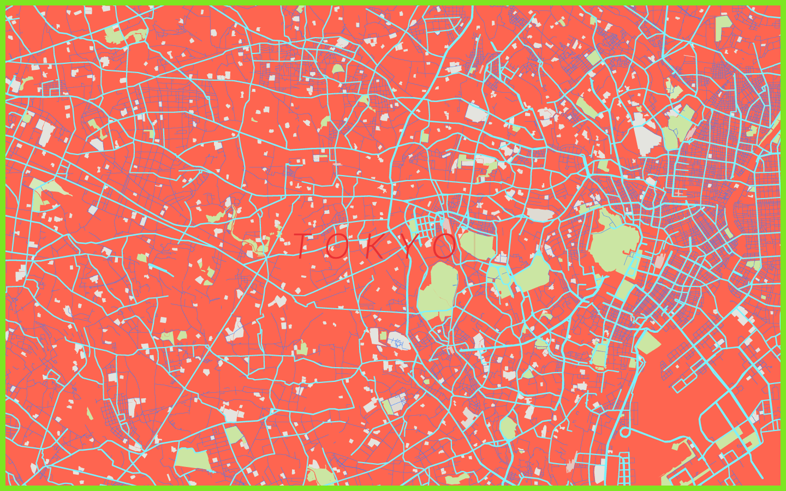

The expansion of the inhabited places of work and transport, neglecting natural, psychological, biological constraints, has become too often indiscriminate attack on a complex system in constant transformation, made of environmental differences, historical, cultural. The tendency for a flattening of the spatial differences is an example and a result of human planning devoid of temporal knowledge.
This design aggressiveness however, it derives from the persistence of the idea that the greatness of human is more technology in their attitude, that in the ability to get in tune with the rhythms of nature. While the territory is losing its structural and formal characterizations, it gives us a perceptive monotony.
The territory should instead be continuously understood through multisensory perception, environmental and material, which is transmission of meanings through colors, but also light, shape, material, texture.
Colorfulcitiesmaps tries to reestablish, color, texture and light to the city, creating new combinations and random shapes, trying to follow in those who are the rhythms of nature, this means that there will never be a repetition, for which would lead inexorably to the monotony and the flattening of the city itself.
This project was developed through the Google Maps APIs that provide the ability to color the map and change the shapes of any part of the world.
I created an algorithm in JavaScript that allows it to make totally random choice of colors and size of the map lines, such as rivers, roads and everything that makes up a city. Colorfulcietesmaps is hosted on tumblr, cities are about 40 and were chosen randomly from me, in the future I want to integrate a small program that it can choose the cities randomly in my place.